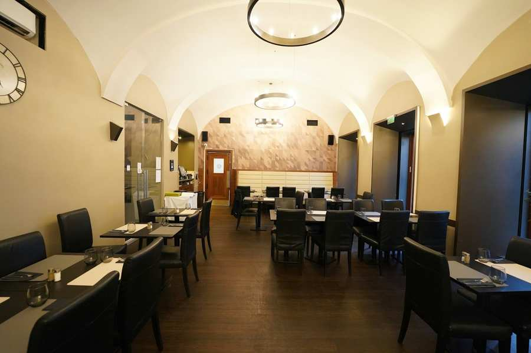

In der Sitzung des Kultusvorstands vom 24. Juni 2025 wurden folgende Themen behandelt:
- Zukunft des Restaurants Alef Alef
- Hilfe für in Israel gestrandete Gemeindemitglieder
- Polizeischutz für jüdische Einrichtungen
- Evaluierung von Sparpotenzialen
- Anpassung der ESRA-Statuten an neue Bestimmungen zur Spendenabsetzbarkeit
Zukunft des Restaurants Alef Alef
Der Leiter der Immobilienabteilung der IKG, Thomas Zäuner, informierte den Kultusvorstand über den Stand der Verhandlungen mit den aktuellen Pächtern des Restaurants Alef Alef. Man sei übereingekommen, den eigentlich bis 2028 laufenden Pachtvertrag mit Ende September 2025 einvernehmlich aufzulösen. Während der Restaurierung des Stadttempels ab Oktober 2025 sei ein Nutzungsrahmenvertrag für ein Jahr ins Auge gefasst, der es den bisherigen Restaurantbetreibern ermöglichen würde, für Veranstaltungen zu catern beziehungsweise – bei entsprechender Vorankündigung – größere Gruppen zu bewirten, wobei nicht mehr im Restaurant gekocht, sondern die Küche nur mehr zum Aufwärmen genützt würde. „Das wäre eine provisorische Lösung für das Jahr des Umbaus.“ Im Anschluss – dann wird auch das Gemeindezentrum saniert – sei angedacht, eine aschkenasische und eine sefardische Aufwärmküche einzubauen, sodass für Kidduschim oder aber auch private Feiern und Veranstaltungen aschkenasisch oder sefardisch gecatert werden könne, erläuterte Präsident Oskar Deutsch (Atid)

Ihm schwebe vor, dass dabei den bisherigen Pächtern Exklusivität für die aschkenasische Küche zukäme, zumindest bis zum Ablaufdatum des ursprünglichen Pachtvertrags 2028. Für die sefardische Küche solle es eine Ausschreibung geben – etwa ein halbes Jahr, bevor im Gemeindezentrum wieder Veranstaltungen stattfinden können. In der anschließenden Diskussion wurde von mehreren Kultusvorständen vorgeschlagen, nur eine Aufwärmküche vorzusehen, die dann – wie an anderen Veranstaltungsorten bereits jetzt – jeweils vorher gekaschert werde. So könnten auch mehr Caterer gebucht werden. Präsident Deutsch schlug vor, hier zunächst in Gesprächen mit den Rabbinern, die die Haschgacha geben, auszuloten, ob das für sie ein gangbarer Weg wäre. Man beschloss daher, dieses Thema zu einem späteren Zeitpunkt en detail zu beraten..
Der Kultusvorstand beschloss einstimmig, den Pachtvertrag für das Restaurant Alef Alef einvernehmlich mit Ende September 2025 aufzulösen. Ebenfalls einstimmig fiel die Zustimmung zur Übergangslösung für das Jahr der Bauarbeiten im Stadttempel bis voraussichtlich Herbst 2026 aus. Wie es danach weitergeht, soll zu einem späteren Zeitpunkt beschlossen werden. Einig ist man sich hier allerdings, dass es nach dem abgeschlossenen Umbau des Gemeindezentrums im Jahr 2026 eine aschkenasische und eine sefardische Möglichkeit zu catern geben soll.
Hilfe für in Israel gestrandete Gemeindemitglieder
Wegen der Kriegssituation mit dem Iran und der Sperre des Luftraums waren viele IKG-Mitglieder in Israel gestrandet. Präsident Deutsch und Vizepräsident Galibov (Jachad) berichteten von vielen Kontaktaufnahmen dieser Mitglieder. daher wurde der IKG-Krisenstab vor einer Woche einberufen. Die Einschläge von Raketen aus dem Iran hätten bei den Betroffenen massive Ängste ausgelöst. In zahlreichen Gesprächen einerseits mit den Gemeindemitgliedern, die auf Grund des eingestellten Flugverkehrs Israel nicht verlassen konnten, andererseits mit der österreichischen Botschaft in Ramat Gan, Außenministerin Beate Meinl-Reisinger und dem Verteidigungsministerium, aber auch Fluglinien konnte schließlich eine Lösung gefunden werden: 160 Personen reisten am Sonntagmorgen von Ramat Gan aus per Bus nach Eilat, von dort über die ägyptische Grenze, begleitet von Bundesheer-Soldaten, nach Sharm el-Sheik, von wo sie mit einer AUA-Maschine nach Wien gebracht wurden. Dort kamen sie Montagfrüh an.
Die Abfahrt aus Ramat Gan hatte sich allerdings nach einem Raketenalarm und einem Einschlag in unmittelbarer Nähe verzögert, berichtete Deutsch. An der Grenze zu Ägypten sei es zudem zu einem mehrstündigen Aufenthalt gekommen.
Sowohl Ministerin Meinl-Reisinger als auch das Präsidium der IKG begrüßten die Zurückgekehrten am Flughafen Schwechat. Die Erleichterung, aber auch Dankbarkeit sei von allen kommuniziert worden. Deutsch wies zudem darauf hin, dass auch kleine Kinder sowie ältere Personen in der Gruppe der nach Österreich Geholten waren, für sie sei die Reise physisch wie psychisch besonders herausfordernd gewesen.
Der IKG-Präsident dankte der Außenministerin, dem österreichischen Botschafter in Israel, aber auch den Mitarbeitern und Mitarbeiterinnen der AUA, die sich freiwillig für diesen Flug in ein Kriegsgebiet gemeldet haben. Er betonte nach einer kurzen Diskussion seitens einiger Kultusvorstände zudem, dass eine Rückholung von Gemeindemitgliedern zwar eigentlich nicht Aufgabe der IKG sei, er aber immer dafür sei, sich für Gemeindemitglieder in Notlagen einzusetzen. So wolle er das auch weiterhin halten. Anders als übrigens mit einer Lufthansa-Maschine nach Deutschland aus Israel Zurückgeholte, mussten die nach Wien Gebrachten nichts für diese Reise zahlen. Hier kommt der Staat Österreich für diese Rückholungsaktion auf.
Polizeischutz für jüdische Einrichtungen
Gad Fischman, Vorsitzender der Sicherheitskommission der IKG, berichtete dass der – inzwischen beendete Krieg zwischen Israel und dem Iran – an der grundsätzlichen Gefährdungssituation in Österreich seit dem 7. Oktober 2023 nichts geändert hat. Es gelte nach wie vor die zweithöchste Terrorwarnstufe und diese bleibe auch nach wie vor aufrecht. Grundsätzlich sei man in ständigem Austausch mit den Sicherheitsbehörden in Österreich.
Fischman appellierte allerdings an alle jüdischen Institutionen, die Sicherheitsabteilung der IKG immer rechtzeitig über Veranstaltungen und Gebetszeiten zu informieren – und dies auch dann zu tun, wenn es zu Änderungen oder Absagen komme, damit die Polizei zu den korrekten Zeiten für Sicherheit in und vor jüdischen Einrichtungen sorgen kann. Die Sicherheitsabteilung fungiert hier als Koordinator zwischen jüdischen Institutionen und der Exekutive.
Evaluierung von Sparpotenzialen
IKG-Präsident Deutsch, der der Finanzkommission vorsteht, informierte den Kultusvorstand, dass aufgrund des Sparkurses der öffentlichen Hand eine Reduktion von Förderungen zu erwarten ist. Gleichzeitig ist die Kultusgemeinde mit Mehrausgaben aufgrund der Kosten für die Sicherheit konfrontiert. Er geht daher davon aus, dass in den Jahren 2025 und 2026 – die Budgets wurden für beide Jahre bereits beschlossen – insgesamt 900.000 Euro weniger ausgegeben werden sollte. Deutsch schlug dem Kultusvorstand daher vor, dass das Generalsekretariat – namentlich Benjamin Nägele und Harald Sasse – damit beauftragt wird, nach Gesprächen mit den Abteilungsleitungen und Kommissionsvorsitzenden nach Sparpotenzialen zu suchen und diese dem KV im Herbst vorzulegen. Dem stimmten alle anwesenden Kultusräte zu.
Anpassung der ESRA-Statuten an neue Bestimmungen zur Spendenabsetzbarkeit
In einer kurzen Generalversammlung des psychosozialen Zentrums ESRA bat dessen Obfrau und KVin Dwora Stein (Bund) den Kultusvorstand einer geringfügigen, semantischen Statutenänderung zuzustimmen. Diese sei aufgrund einer Änderung im Einkommenssteuergesetz im Zusammenhang mit der Spendenabsetzbarkeit nötig, informierte ESRA-Geschäftsführerin Susanne Schütt. Der Kultusvorstand stimmte dem einstimmig zu.